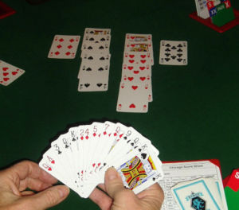

Hry môžeme deliť na:
Spoločenské hry:
Šach
Šach je deterministická strategická hra s úplnou informáciou pre dvoch hráčov, v ktorej o výsledku rozhodujú taktické a strategické schopnosti hráčov a ich pozornosť a sústredenie. Cieľom hry je dať súperovi mat. Má v sebe prvky umenia, vedy a športu.
Monopoly
Monopoly je jedna z najpredávanejších doskových hier na svete. Hráči sa snažia získať bohatstvo cez jednoduché ekonomické aktivity zahŕňajúce nákup, prenájom a výmenu použitím herných peňazí.
Dixit
Dixit je interpretačná príbehová hra, v ktorej sa jeden z hráčov stáva rozprávačom a snaží sa opísať kartu, ktorú položil na stôl tak, aby nik nevidel jej obsah. Ostatní hráči nísledne položia na stôl jednu kartu. Všetky karty sa potom zamiešajú, otočia a hráči hádajú, ktorú kartu rozprávač opisoval.
Scrabble
Scrabble je licencovaná slovná dosková hra pre dvoch až štyroch hráčov. Hrá sa na hracom pláne rozmerov 15x15 políčok. Hráči zo svojich písmenok formulujú slová tak, aby získali čo najviac bodov.
Osadnici z Katanu
Osadníci z Katanu je moderná spoločenská hra pre 3 – 4 hráčov (s rozšíreniami pre 3 – 6 hráčov, so zapracovaním variantu aj pre 2 hráčov), ktorá sa po prvýkrát objavila na trhu v roku 1995 pod názvom Die Siedler von Catan.

Dáma
Dáma je dosková strategická hra. Existuje jej viacero variantov, napr. klasická dáma, žravá dáma a poľská dáma.
Kartové hry
Pexeso
Pexeso je druh kartovej hry, pri ktorej je potrebná hlavne pamäť. Názov PEXESO je česká skratka vytvorená zo súslovia PEKELNĚ SE SOUSTŘEĎ.
Bang
Bang je dramatická kartová hra s tematikou Divokého západu, kde cieľom je prežiť! Hráči na seba berú rôzne role bežné na divokom západe. Cieľom hry je vtipnou formou „vystrieľať“ role nepriateľské a prežiť.
Solitaire
Samotné hranie bolo vždy alternatívou pre časy, keď nemáte spoločnosť. Túto hru však ocenia aj mysle, ktoré chcú dokázať svoju mentálnu obratnosť. Napriek svojej popularite to nie každý vie ako hrať solitaire.
Bridž
Bridž je kartová hra pre štyroch hráčov, kde hráči sediaci oproti sebe tvoria pár nazývaný linka. Hrá sa s jednou sadou francúzskych kariet bez žolíkov.
Magic The Gathering
Magic The Gathering (skrátene MTG) je zberateľská kartová hra. Organizujú sa v nej majstrovské turnaje aj o veľké peniaze a to vrátane majstrovstiev sveta. V roku 1993 ju vydala firma Wizards of the Coast v USA a rýchlo sa rozšírila do väčšiny sveta. V Českej republike sa predáva od roku 1994. Hra bola preložená do mnohých svetových jazykov, ale v ČR sa predáva pôvodná anglická verzia.
Poker
Poker je hazardná kartová hra. Princíp hry spočíva v tom, že každá kombinácia kariet je hierarchicky zatriedená, aby bolo možné určiť víťaza (napr. tri karty s rovnakým symbolom majú vyššiu hodnotu než dve karty s rovnakým symbolom).
Uno
Uno je americká kartová hra pre 2–10 hráčov, ktorú vymyslel v roku 1971 holič Merle Robbins z Readingu v americkom Ohiu . Hra mala veľký úspech a rozšírila sa do väčšiny sveta.